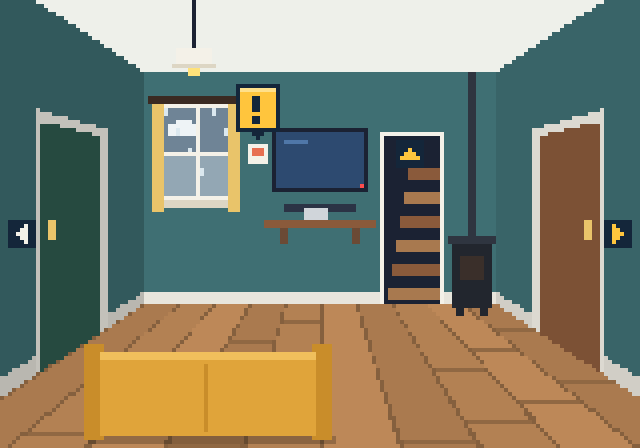
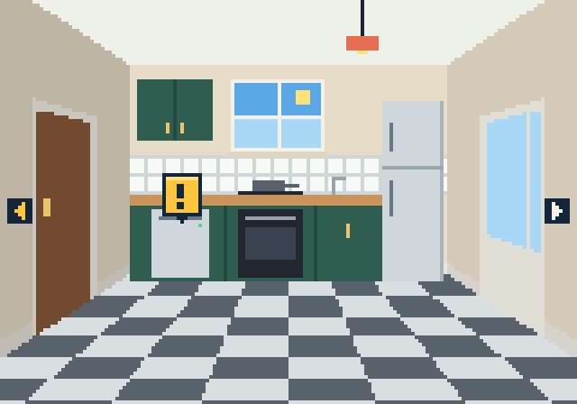
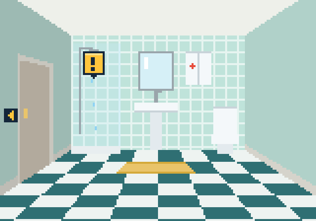
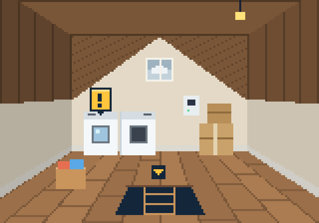
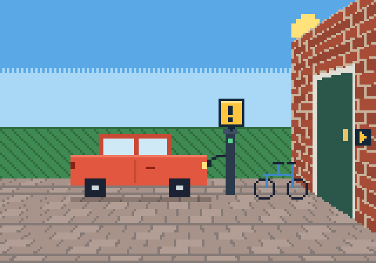

Huize Zuinig
Het gratis milieuspel voor iedereen die Thuis in het Milieu nog kent van de basisschool. Nu in pixel art, voor in je browser.
Je loopt een week lang door je huis, scheidt afval, zet de verwarming lager en kiest steeds de zuinigste optie. Aan het eind krijgt je huis een energielabel van A tot G.
Speel gratisGeen account, geen advertenties. Werkt op computer, tablet en telefoon.

Hoe werkt Huize Zuinig?
Loop door het huis
Ga via deuren en trappen van de woonkamer naar de keuken, slaapkamer, badkamer, zolder, tuin en oprit.
Maak de keuze
Op elke dag wachten drie klussen. Tik op het uitroepteken en kies uit drie opties wat je doet.
Verdien je energielabel
Zuinige keuzes leveren blaadjes op. Na zeven dagen zie je je label en je verbruik naast het zuinigste en het meest verkwistende huis.
Wat leer je ervan?
Elke klus draait om een echte keuze die je thuis ook maakt. Na elke keuze lees je waarom een optie zuiniger of slimmer is.
Energie besparen
Thermostaat, sluipverbruik, ledlampen, wassen op 30 graden en je auto laden op zonnestroom.
Water besparen
Korter douchen, een druppelende kraan repareren en de vaatwasser pas aanzetten als hij vol is.
Afval scheiden
Pizzadozen, statiegeld, lege batterijen, kapotte glazen en oude medicijnen: waar hoort wat?
Slim eten
Minder vlees, groente van het seizoen en weten wat "ten minste houdbaar tot" echt betekent.
Vervoer
Fiets of auto voor de boodschappen, en wanneer je het beste je elektrische auto laadt.
Gezond en prettig wonen
Ventileren, een warm huis zonder verspilling en het stookalert bij mist.
Zeven kamers om te ontdekken




Voor in de klas
Huize Zuinig is bedoeld voor kinderen van ongeveer groep 6 tot en met 8, en voor iedereen die nieuwsgierig is. Het is gratis, heeft geen account en verzamelt geen gegevens, dus je kunt het zo op het digibord of de tablets gebruiken.
- Per dag: één dag duurt ongeveer 3 tot 5 minuten, goed voor het begin van een les of als weekopdracht.
- In groepjes: laat tweetallen samen kiezen en hun keuze verdedigen voordat ze op de optie tikken.
- Vergelijken: vergelijk de energielabels en bespreek wie er waarom anders koos.
- Voorspellen
- Spelen
- Label vergelijken
- Bespreken
Vragen om te bespreken
- Welke keuze had het meeste effect op je energielabel, en waarom?
- Wanneer was de zuinigste keuze niet de prettigste? Wat is een goede middenweg?
- Welke keuzes uit het spel maak jij thuis al, en welke zou je kunnen veranderen?
De adviezen in het spel kloppen in grote lijnen. De cijfers voor energie, water en afval zijn ruwe schattingen om keuzes te vergelijken en geen meetgegevens.
Ken je Thuis in het Milieu?
Wie in de jaren negentig op de basisschool zat, kent het misschien nog: een computerspel waarin je klusjes in en om het huis doet en onderweg vragen over het milieu beantwoordt. Afval buiten zetten, de radiatoren bedienen, douchen en de was doen. Aan het einde van de week zie je hoe zuinig je was.
- Thuis in het Milieu: educatief spel van uitgeverij Malmberg uit 1990, gemaakt door Redline Software Design.
- Speelbaar: het Internet Archive heeft het originele spel online gezet. Speel het origineel in je browser.
- Bewaard: het Nationaal Archief Educatieve Games bewaart het spel als onderdeel van het Nederlandse educatieve spelerfgoed.
Huize Zuinig is geïnspireerd op dat idee, maar volledig nieuw gemaakt: nieuwe code, nieuwe pixel art en nieuwe klussen, zoals zonnepanelen en een elektrische auto. Het idee van een huis vol milieukeuzes is niet van één spel, en elk spel in dit genre is anders.
Huize Zuinig is een onafhankelijk project en niet gelieerd aan Malmberg, Redline Software Design of de makers van Thuis in het Milieu.
Veelgestelde vragen
Is Huize Zuinig hetzelfde als Thuis in het Milieu?
Nee. Thuis in het Milieu is een educatief spel van Malmberg uit 1990. Huize Zuinig is een nieuw, onafhankelijk spel dat dezelfde ervaring wil geven: een huis, dagelijkse klusjes en vragen over wat het beste is voor het milieu. Het is niet gelieerd aan Malmberg of aan de makers van het originele spel.
Kan ik Thuis in het Milieu nog spelen?
Ja. Het Internet Archive heeft het originele spel online speelbaar gemaakt in een emulator. Je vindt de link hierboven bij het kopje over Thuis in het Milieu.
Is Huize Zuinig gratis?
Ja, het spel is gratis, zonder account en zonder advertenties. De broncode is open source onder de MIT-licentie.
Werkt het op een telefoon, tablet of digibord?
Ja. Het spel draait in de browser op computers, tablets, telefoons en digiborden. Je hoeft niets te installeren.
Worden er gegevens van spelers verzameld?
Nee. Het spel gebruikt geen account, geen cookies en geen statistieken. Je voortgang staat alleen in het geheugen van je browser tijdens het spelen.
Hoe lang duurt het spel?
Een speelweek heeft zeven dagen met drie klussen per dag. Een hele week duurt ongeveer 20 tot 30 minuten, en je kunt het ook per dag spelen.
Kloppen de cijfers over energie, water en afval?
De adviezen kloppen in grote lijnen, bijvoorbeeld statiegeld, het scheiden van afval en het gebruik van een ledlamp. De getallen in het spel zijn ruwe schattingen om keuzes met elkaar te vergelijken. Het zijn geen meetgegevens.